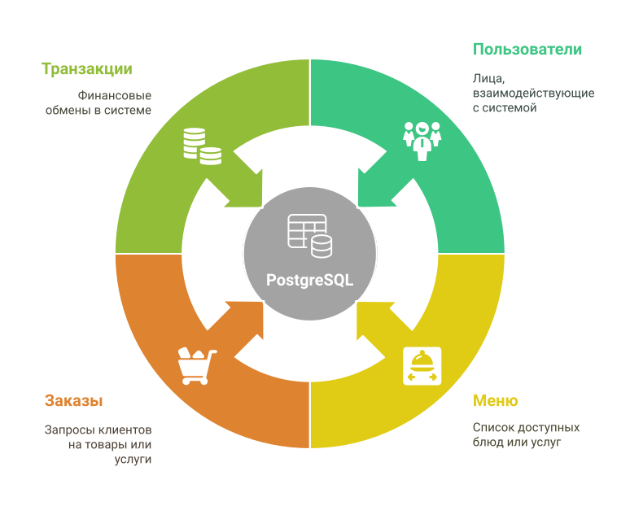

Мобильное приложение для доставки еды из сети ресторанов. ARIG
1. Сбор и анализ информации
- Интервью с заказчиком
- Опросы и анкеты
- Наблюдение за текущими процессами
- Анализ существующих данных и документации
- Анализ конкурентов и рынка — понимание текущих решений и потребностей пользователей на рынке
2. Формализация требований
- User Story (пользовательская история)— потребности пользователей, с фокусом на бизнес-ценность
- Функциональные требования (ФТ) — что должна делать система, в том числе специфические функции, такие как заказ, оплата, доставка и т.д.
- Нефункциональные требования (НФТ) — ограничения, производительность, безопасность, доступность, масштабируемость, требования к поддержке
- Use Cases (Сценарий использования) — сценарии взаимодействия пользователя с системой
- Acceptance Criteria (Критерии приемки) — когда задача считается выполненной, с чёткими метриками и показателями качества
- C4 модель
3. Приоритизация требований
- MoSCoW (Must, Should, Could, Won’t)
- Kano (Основные, Ожидаемые, Привлекательные, Неважные, Отрицательные)
- Методы оценки бизнес-ценности и рисков — для более сбалансированной приоритизации
- Другие методы по необходимости (100 Points, Weighted Scoring)
4. Разработка артефактов
- Диаграммы (UML, BPMN, DFD и др.)
- Прототипы интерфейсов
- ER-диаграммы, модели данных
- Таблицы соответствия требований
- Архитектурные схемы системы — для отображения компонентов и взаимодействий
- Тестовые сценарии и кейсы — для тестирования функциональности
5. Декомпозиция задач
- Разделение требований и юз кейсов на подзадачи
- Структура: Epic → Feature → Task → Subtask
- Формирование backlog — с детальной оценкой сложности и приоритетов
6. Документирование
- Оформление всей информации в документах:
- Confluence / Notion / Word / Excel
- Таблицы, схемы, вложения
- Ответственность за документацию — указание ответственного за хранение и актуализацию документации
- Передача документации разработке и тестированию
7. Управление изменениями
- Управление запросами на изменения требований
- Оценка влияния изменений на проект
- Обновление документации и артефактов в случае изменений
8. Оценка и контроль качества
- Ревизия требований и артефактов с участниками проекта
- Проверка соответствия выполненных задач требованиям
- Интеграционное тестирование, тестирование пользовательского опыта
9. Передача проекта в эксплуатацию
- Подготовка инструкций для пользователей
- Подготовка и проведение обучения для пользователей и сотрудников
- Пострелизная поддержка и мониторинг
10. Завершение проекта
- Оценка результатов проекта по заранее установленным критериям
- Составление отчета о проекте
- Архивирование всех материалов для возможных будущих обновлений или анализа
1. Сбор и анализ информации. Интервью с заказчиком
1.1 Перед встречей
-
Изучается информация о бизнесе, целевой аудитории и текущих проблемах с доставкой.
-
Разрабатывается список вопросов для выяснения потребностей заказчика.
-
Определяется, кто еще из команды может участвовать в интервью.
1.2 Проведение интервью
Интервью делится на несколько этапов:
-
Приветствие и объяснение цели встречи.
-
Вопросы о ключевых функциях (заказ, оплата, доставка), интерфейсе, системе и взаимодействии с пользователями.
- Дополнительные вопросы, чтобы понять детали.
- Подведение итогов и проверка понимания требований.
- Запрос на дополнительные пожелания, которые могут быть забыты.
🔎 Изучение информации о бизнесе
📋 Анкетирование:
- 🍽️ Формат сети ресторанов
Тип заведения: фастфуд / кафе / ресторан / пиццерия
- 🍔 Специализация кухни
Основные блюда бургеры / суши / паста / вок
- 🌍 География присутствия
Количество заведений: 1
Локации: Москва / САО
- 📈 Планы развития
Планируется расширение?: Да / Нет
Будущая география: —
- 💡 Уникальность бренда
Чем отличается от конкурентов: Доставка своими силами
УТП (уникальное торговое предложение): Только для жителей в пределах ТЦ
- 🧑🤝🧑 Целевая аудитория
Возраст: —
Поведение / привычки: Не доверяют агрегаторам
Потребности и боли: Нужна своя доставка
- 💻 Текущие цифровые решения
Сайт: есть / нет
Агрегаторы доставки: Яндекск.Еда
CRM / приложения: да / нет
🔍 Интервьюирование заказчика
💬 Опрос:
- ❓ Какие основные функции вы ожидаете от мобильного приложения?
🗣️ заказ еды, отслеживание доставки, личный кабинет, отзывы.
- ❓ Какую проблему вы хотите решить с помощью этого приложения?
🗣️ увеличить продажи, обойти агрегаторов.
- ❓ Опишите процесс оформления заказа
🗣️ клиент регистрируется, выбирает блюдо, выбирает способ доставки, оплачивает.
- ❓ Какой способ оплаты вы планируете поддерживать?
🗣️ предоплата по банковской картой в приложении.
- ❓ Будет ли возможность сделать заказ без регистрации?
🗣️ нет.
- ❓ Какие данные вы хотите собирать о пользователях?
🗣️ телефон, адрес, история заказов.
- ❓ Кто будет администрировать заказы и следить за их выполнением?
🗣️ менеджер, кассир, повар.
- ❓ Как вы хотите получать уведомления о новых заказах?
🗣️ звук, пуши, смс, почта, внутри системы.
- ❓ Какие у вас требования к дизайну и стилю приложения?
🗣️ минимализм, фирменные цвета.
- ❓ Есть ли уже технические решения, которые нужно интегрировать?
🗣️ CRM, склад, учет, база клиентов.
- ❓ Как будет происходить процесс регистрации пользователя?
🗣️ через номер телефона и почту, госуслуги.
- ❓ Какие методы доставки должны быть доступны?
🗣️ самовывоз, курьерская доставка.
- ❓ Какие предпочтения по скорости доставки и времени?
🗣️ доставка в течение 30-60 минут, возможность выбора времени.
- ❓ Какие ограничения по месту проживания пользователей?
🗣️ Москва. Ховрино. Проживание в пределац ТЦ.
- ❓ Что должно быть на главной странице приложения?
🗣️ меню, специальные предложения, информация о доставке, история заказов.
- ❓ Нужно ли добавлять возможность для клиента отслеживать статус своего заказа в реальном времени?
🗣️ да, статус заказа.
- ❓ Какую аналитику хотите собирать?
🗣️ данные о покупках, время заказов, средний чек, популярные блюда.
- ❓ Под какие мобильные платформы будет приложение?
🗣️ IOS.
- ❓ Какие статусы должен иметь заказ?
🗣️ создан, принят, готовится, в пути, доставлен, отменён.
- ❓ Можно ли отменить заказ? Если да — до какого этапа?
🗣️ до начала приготовления.
- ❓ Требуется ли подтверждение от ресторана перед началом выполнения заказа?
🗣️ да.
- ❓ Что делать, если блюдо недоступно?
🗣️ уведомление пользователю, предложение замены.
- ❓ Можно ли оставить чаевые курьеру?
🗣️ нет.
- ❓ Какой платежный провайдер будет использоваться?
🗣️ Т Касса
- ❓ Требуется ли фискализация и выдача чеков?
🗣️ да, чек по email и в приложении.
- ❓ Нужно ли сохранять банковскую карту для повторных оплат?
🗣️ да.
- ❓ Какие функции должны быть в личном кабинете?
🗣️ редактирование профиля, история заказов, настройки уведомлений, смена пароля.
- ❓ Нужно ли хранить несколько адресов доставки?
🗣️ да.
- ❓ Планируется ли программа лояльности или бонусов?
🗣️ да, кэшбэк и персональные предложения.
- ❓ Какие события должны вызывать уведомления?
🗣️ новый заказ, изменение статуса, проблемы с доставкой, акции.
- ❓ Какой канал уведомлений приоритетный?
🗣️ пуш, затем смс.
- ❓ Какие конкретно CRM, складские и учетные системы нужно интегрировать?
🗣️ (Мой Склад)
- ❓ Какие действия должны синхронизироваться с CRM?
🗣️ новые заказы, статусы, данные клиента.
- ❓ Планируется ли Android-версия в будущем?
🗣️ да.
- ❓ Будет ли веб-версия приложения?
🗣️ нет
- ❓ Требуется ли офлайн-режим?
🗣️ нет.
- ❓ Нужна ли поддержка нескольких языков?
🗣️ нет.
- ❓ Нужна ли авторизация для сотрудников (менеджер, кассир, повар)?
🗣️ да, с разными правами доступа.
2. Формализация данных
2.1. User Storie/Пользовательские требования (US/Пользовательская история)
Это описание потребностей пользователей, сделанное с точки зрения конечного результата в формате как... я хочу... чтобы... Пример:
- Как пользователь, я хочу иметь возможность заказать еду через приложение, чтобы получить свою еду быстро и удобно.
- Как пользователь, я хочу иметь возможность отслеживать статус доставки, чтобы** быть в курсе, где моя еда.
Для User Story есть несколько методов, которые помогут эффективно формулировать и организовывать требования. Вот 2 основных метода, которые можно применить при написании User Story:
INVEST
Метод INVEST помогает создавать качественные User Stories, которые легко реализовывать, тестировать и интегрировать в проект. Это акроним, где каждый элемент представляет ключевые характеристики хорошей User Story:
- I — Independent (Независимая): User Story должна быть независимой от других историй, функций.
- N — Negotiable (Обсуждаемая): Требования могут быть изменены в ходе разработки, с учетом приоритетов и потребностей.
- V — Valuable (Ценная): User Story должна приносить ценность пользователю или бизнесу.
- E — Estimable (Оцениваемая): User Story должна быть достаточно понятной для оценки её сложности.
- S — Small (Краткая): User Story должна быть достаточно маленькой и конкретной для реализации в рамках одного спринта.
- T — Testable (Тестируемая): У User Story должны быть критерии приемки, которые можно проверить.
SMART
Метод SMART помогает формулировать требования, которые можно четко измерить и выполнить в рамках проекта:
- S — Specific (Конкретный): Требование должно быть чётким и однозначным (Улучшить скорость загрузки мобильного приложения).
- M — Measurable (Измеримый): Требование можно оценить, когда оно будет выполнено (Уменьшить время загрузки с 5 секунд до 2 секунд).
- A — Achievable (Достижимый): Требование должно быть реалистичным с точки зрения ресурсов и времени (Оптимизировать код, сжать изображения).
- R — Relevant (Актуальный): Требование должно быть значимым и важным для конечного пользователя (Быстрое приложение повысит удержание пользователей).
- T — Time-bound (Ограниченный по времени): Требование должно быть выполнено в определенные сроки (Реализовать в течение 2 недель).
2.2 Функциональные и нефункциональные требования
- Функциональные требования (ФТ/FR)
Это что система должна делать. Это поведение, функции, задачи, которые система выполняет.
Примеры: оформление заказа, регистрация, оплата, уведомления.
- Нефункциональные Требования (НФТ/NFR)
Это как система должна работать. Это ограничения, характеристики качества, условия работы.
Примеры: безопасность, скорость, масштабируемость, поддержка только iOS.
2.3 Use Cases (Сценарии использования)
Это подробные сценарии, которые показывают, как пользователи будут взаимодействовать с приложением. Например: - Сценарий 1: Пользователь заходит в приложение, регистрируется через телефон, выбирает блюдо, добавляет в корзину, оплачивает и оформляет доставку. - Сценарий 2: Пользователь отслеживает статус своего заказа на главной странице приложения.
2.4 Acceptance Criteria (Критерии приемки)
Четкие критерии, которые должны быть выполнены для того, чтобы считать задачу выполненной:
- Приложение должно корректно отображать меню с актуальными блюдами.
- Пользователь должен иметь возможность выполнить оплату и получить подтверждение о заказе.
- Должна быть возможность получения уведомлений о статусе заказа.
2.5 C4 Model для Мобильного приложения доставки еды
1. Контекстная диаграмма (Level 1)
Эта диаграмма показывает высокоуровневое представление системы и её взаимодействие с внешними системами и пользователями. Включает основные компоненты и их связи.
Участники:
- Пользователь (клиент):
использует мобильное приложение для оформления заказов, отслеживания доставки, редактирования профиля. - Мобильное приложение:
клиентская часть, где пользователь взаимодействует с системой. - Серверное приложение:
отвечает за логику обработки заказов, управления пользователями и взаимодействия с базой данных. - База данных:
хранит информацию о заказах, пользователях, меню и транзакциях. - Внешние API (платежные системы, уведомления):
интеграция с внешними сервисами для обработки платежей, отправки уведомлений и т.д.

2. Диаграмма контейнеров (Level 2)
Эта диаграмма более детализированно отображает, как система разбивается на основные компоненты.
Контейнеры:
- Мобильное приложение (клиент):
нативное мобильное приложение для пользователей, которое позволяет:- Регистрация / Авторизация пользователей
- Просмотр меню
- Оформление заказа
- Получение уведомления

- Серверное приложение:
бэкенд для обработки логики:- Получение запросов от клиентов
- Обработка заказов
- Взаимодействие с базой данных и внешними сервисами

- База данных:
система хранения данных:- Пользователи
- Меню
- Заказы
- Транзакции

- Внешние API:
интеграции с внешними сервисами для:- Платежей (например, через платёжный шлюз)
- Уведомлений (push-сообщения, email-уведомления)
- Синхронизации (CRM Мой Склад)

3. Диаграмма компонентов (Level 3)
Здесь показаны основные компоненты внутри каждого контейнера, с более детализированным описанием взаимодействий.
- Мобильное приложение:
- Компоненты для управления сессиями пользователей (регистрация, авторизация)
- Компоненты для отображения меню и добавления товаров в корзину
- Компоненты для оформления и отслеживания заказов
- Компоненты для редактирования профиля и уведомлений
- Серверное приложение:
- Компонент для обработки заказов
- Компонент для взаимодействия с базой данных
- Компонент для взаимодействия с внешними API (например, платёжные системы и уведомления)
- База данных: несколько таблиц:
- Пользователи
- Меню
- Заказы
- Транзакции
- Внешние API:
взаимодействие с платёжными системами и системой уведомлений.

4. Диаграмма взаимодействий (Level 4)
Эта диаграмма детализирует взаимодействия между компонентами при выполнении конкретных операций, например, при оформлении заказа.
Пример сценария:
- Пользователь регистрируется в мобильном приложении.
- Пользователь выбирает товар из меню и добавляет его в корзину.
- Пользователь оформляет заказ и выбирает способ доставки.
- Серверное приложение обрабатывает запрос, взаимодействует с базой данных для создания нового заказа.
- Внешняя система уведомлений отправляет уведомление пользователю о статусе заказа.
- Платежная система обрабатывает оплату.
- База данных обновляет транзакцию и статус заказа.

⚙️ US+UC+FR+NFR+AC:
📘 User Stories — Мобильное приложение доставки еды
🟢 User Story 1 — Регистрация и вход
Как новый пользователь,
я хочу зарегистрироваться через телефон, email или Госуслуги,
чтобы сохранять историю заказов и данные о доставке
📘 Use Case
Название: Создание аккаунта
Актор: Пользователь
Основной сценарий:
1. Пользователь нажимает «Зарегистрироваться».
2. Выбирает способ: телефон, email, Госуслуги.
3. Вводит данные и подтверждает их через SMS/email/OAuth.
4. Система создаёт аккаунт и авторизует пользователя.
✅ Функциональные требования
- Поддержка трёх методов регистрации.
- Валидация формата данных (телефон, email).
- Автоматический вход после подтверждения.
⚙️ Нефункциональные требования
- Время обработки запроса ≤ 2 сек.
- Соответствие ФЗ-152 (персональные данные).
- Доступность 99.9%.
✔ Acceptance Criteria
- Регистрация доступна через телефон, email, Госуслуги.
- При дублировании данных выводится ошибка.
- После регистрации пользователь попадает в меню.
🟢 User Story 2 — Просмотр меню
Как пользователь,
я хочу видеть меню с фото и ценами,
чтобы выбрать блюда.
📘 Use Case
Название: Выбор блюд
Актор: Пользователь
Основной сценарий:
1. Пользователь открывает раздел «Меню».
2. Система загружает список блюд.
3. Пользователь применяет фильтры (вегетарианское, острое).
4. Система показывает отфильтрованные результаты.
✅ Функциональные требования
- Отображение фото, названия, цены, состава.
- Фильтры по категориям и аллергенам.
- Поиск по названию блюда.
⚙️ Нефункциональные требования
- Загрузка меню ≤ 1.5 сек.
- Поддержка 500+ позиций.
- Кэширование данных на 1 час.
✔ Acceptance Criteria
- Все блюда отображаются без ошибок.
- Фильтры работают корректно.
- Поиск находит блюда по части названия.
🟢 User Story 3 — Оформление заказа
Как пользователь,
я хочу добавить блюда в корзину и оформить заказ,
чтобы получить еду.
📘 Use Case
Название: Создание заказа
Актор: Пользователь
Основной сценарий:
1. Пользователь добавляет блюда в корзину.
2. Переходит к оформлению заказа.
3. Выбирает способ доставки (курьер/самовывоз).
4. Подтверждает заказ.
✅ Функциональные требования
- Добавление/удаление позиций из корзины.
- Расчет итоговой суммы.
- Выбор адреса доставки.
⚙️ Нефункциональные требования
- Сохранение корзины при перезагрузке.
- Время обработки заказа ≤ 3 сек.
✔ Acceptance Criteria
- Цена пересчитывается при изменении корзины.
- Можно выбрать курьера или самовывоз.
- Заказ отображается в истории.
🟢 User Story 4 — Оплата картой
Как пользователь,
я хочу оплатить заказ картой,
чтобы не вводить данные повторно.
📘 Use Case
Название: Онлайн-оплата
Актор: Пользователь
Основной сценарий:
1. Пользователь переходит к оплате.
2. Вводит данные карты или выбирает сохранённую.
3. Подтверждает оплату.
4. Получает чек на email.
✅ Функциональные требования
- Интеграция с платёжным шлюзом (ЮKassa/Stripe).
- Сохранение карты (с согласия пользователя).
⚙️ Нефункциональные требования
- Соответствие PCI DSS.
- Шифрование данных карты.
✔ Acceptance Criteria
- Оплата проходит без ошибок.
- Чек приходит на email в течение 1 минуты.
- Данные карты не сохраняются без согласия.
🟢 User Story 5 — Отслеживание заказа
Как пользователь,
я хочу видеть статус заказа на карте,
чтобы знать время доставки.
📘 Use Case
Название: Мониторинг доставки
Актор: Пользователь
Основной сценарий:
1. Пользователь открывает «Мои заказы».
2. Выбирает активный заказ.
3. Видит статус и местоположение курьера.
✅ Функциональные требования
- Отображение статусов: «Принят», «В пути», «Доставлен».
- Интеграция с картографическим сервисом (Яндекс.Карты).
⚙️ Нефункциональные требования
- Обновление статуса каждые 15 сек.
- Точность геолокации ±50 метров.
✔ Acceptance Criteria
- Статус заказа обновляется в реальном времени.
- Курьер отображается на карте.
🟢 User Story 6 — Отмена заказа
Как пользователь,
я хочу отменить заказ до начала готовки,
чтобы вернуть деньги.
📘 Use Case
Название: Отмена заказа
Актор: Пользователь
Основной сценарий:
1. Пользователь открывает «Мои заказы».
2. Нажимает «Отменить» для заказа в статусе «Принят».
3. Получает подтверждение отмены.
✅ Функциональные требования
- Кнопка «Отменить» в статусе «Принят».
- Автоматический возврат средств.
⚙️ Нефункциональные требования
- Возврат денег в течение 1-3 рабочих дней.
✔ Acceptance Criteria
- Отмена доступна только в статусе «Принят».
- Уведомление об отмене приходит в течение 1 минуты.
🟢 User Story 7 — История заказов
Как пользователь,
я хочу видеть историю заказов,
чтобы повторять их.
📘 Use Case
Название: Просмотр истории
Актор: Пользователь
Основной сценарий:
1. Пользователь открывает «История заказов».
2. Видит список за последние 12 месяцев.
3. Нажимает «Повторить» для выбранного заказа.
✅ Функциональные требования
- Фильтрация по дате и статусу.
- Кнопка «Повторить заказ».
⚙️ Нефункциональные требования
- Хранение истории ≥ 12 месяцев.
✔ Acceptance Criteria
- История содержит все завершённые заказы.
- Повторный заказ создаётся за 2 клика.
🟢 User Story 8 — Оставление отзыва
Как пользователь,
я хочу оценить заказ,
чтобы помочь другим.
📘 Use Case
Название: Написание отзыва
Актор: Пользователь
Основной сценарий:
1. После доставки пользователь получает уведомление.
2. Переходит в раздел «Отзывы».
3. Ставит оценку и пишет комментарий.
✅ Функциональные требования
- Оценка от 1 до 5 звёзд.
- Текстовый отзыв (до 500 символов).
⚙️ Нефункциональные требования
- Модерация отзывов перед публикацией.
✔ Acceptance Criteria
- Отзыв сохраняется после отправки.
- Пользователи видят только одобренные отзывы.
🟢 User Story 9 — Поддержка клиентов
Как пользователь,
я хочу связаться с поддержкой,
чтобы решить проблему.
📘 Use Case
Название: Обращение в поддержку
Актор: Пользователь
Основной сценарий:
1. Пользователь открывает «Помощь».
2. Выбирает «Написать в поддержку».
3. Описывает проблему и отправляет сообщение.
✅ Функциональные требования
- Чат с поддержкой в реальном времени.
- Прикрепление файлов (фото, скриншоты).
⚙️ Нефункциональные требования
- Среднее время ответа ≤ 15 минут.
✔ Acceptance Criteria
- Сообщения доставляются без задержек.
- История чата сохраняется.
🟢 User Story 10 — Редактирование профиля
Как пользователь,
я хочу менять личные данные,
чтобы актуализировать информацию.
📘 Use Case
Название: Обновление профиля
Актор: Пользователь
Основной сценарий:
1. Пользователь открывает «Профиль».
2. Нажимает «Редактировать».
3. Вносит изменения и сохраняет.
✅ Функциональные требования
- Изменение имени, телефона, email, адреса.
- Подтверждение через SMS/email.
⚙️ Нефункциональные требования
- Защита от XSS/CSRF-атак.
✔ Acceptance Criteria
- Данные обновляются без ошибок.
- Подтверждение при смене телефона/email.
🟢 User Story 11 — Управление заказами (админ)
Как менеджер,
я хочу видеть все заказы,
чтобы контролировать процесс.
📘 Use Case
Название: Администрирование заказов
Актор: Менеджер
Основной сценарий:
1. Менеджер открывает панель управления.
2. Видит список заказов.
3. Меняет статусы (например, «В работе» → «Готов»).
✅ Функциональные требования
- Фильтрация по статусам и датам.
- Ручное изменение статусов.
⚙️ Нефункциональные требования
- Обновление данных каждые 10 сек.
✔ Acceptance Criteria
- Изменения статусов сохраняются мгновенно.
- Нет доступа к чужим заказам.
🟢 User Story 12 — Уведомления для персонала
Как повар,
я хочу получать уведомления о новых заказах,
чтобы начать готовить.
📘 Use Case
Название: Оповещение о заказе
Актор: Повар
Основной сценарий:
1. Пользователь оформляет заказ.
2. Система отправляет уведомление повару.
3. Повар подтверждает получение.
✅ Функциональные требования
- Push-уведомления и звуковой сигнал.
⚙️ Нефункциональные требования
- Доставка уведомлений ≤ 5 сек.
✔ Acceptance Criteria
- Уведомления приходят мгновенно.
- Повар видит список новых заказов.
🟢 User Story 13 — Минималистичный дизайн
Как пользователь,
я хочу простой интерфейс,
чтобы легко ориентироваться.
📘 Use Case
Название: Использование интерфейса
Актор: Пользователь
Основной сценарий:
1. Пользователь открывает приложение.
2. Видит главный экран с ключевыми разделами.
3. Переходит в нужный раздел за 2 клика.
✅ Функциональные требования
- Навигация без лишних элементов.
- Фирменные цвета и шрифты.
⚙️ Нефункциональные требования
- Поддержка тёмной/светлой темы.
- Адаптация под экраны от 4.7 дюймов.
✔ Acceptance Criteria
- Все элементы интерфейса соответствуют гайдлайнам.
- Нет визуального «шума».
🟢 User Story 14 — Проверка зоны доставки
Как пользователь,
я хочу знать, доступна ли доставка,
чтобы не тратить время.
📘 Use Case
Название: Проверка адреса
Актор: Пользователь
Основной сценарий:
1. Пользователь вводит адрес.
2. Система проверяет зону доставки.
3. Если недоступно — показывает ошибку.
✅ Функциональные требования
- Интеграция с картографическим API.
⚙️ Нефункциональные требования
- Точность проверки до здания.
✔ Acceptance Criteria
- Ошибка «Доставка недоступна» при неверном адресе.
🟢 User Story 15 — Главная страница
Как пользователь,
я хочу видеть акции и рекомендации,
чтобы быстрее выбрать.
📘 Use Case
Название: Просмотр главной страницы
Актор: Пользователь
Основной сценарий:
1. Пользователь открывает приложение.
2. Видит баннеры акций и топовые блюда.
3. Нажимает на заинтересовавшее предложение.
✅ Функциональные требования
- Ротация баннеров каждые 24 часа.
- Рекомендации на основе истории заказов.
⚙️ Нефункциональные требования
- Загрузка главной страницы ≤ 1 сек.
✔ Acceptance Criteria
- Баннеры отображаются без ошибок.
- Рекомендации соответствуют предпочтениям.
🟢 User Story 16 — Интеграция с CRM
Как владелец бизнеса,
я хочу синхронизировать данные с CRM,
чтобы автоматизировать процессы.
📘 Use Case
Название: Синхронизация данных
Актор: Система
Основной сценарий:
1. Пользователь оформляет заказ.
2. Система создаёт запись в CRM.
3. Данные обновляются в реальном времени.
✅ Функциональные требования
- API для интеграции с Мой Склад CRM.
⚙️ Нефункциональные требования
- Время синхронизации ≤ 2 сек.
✔ Acceptance Criteria
- Заказы автоматически попадают в CRM.
- Нет дублирования данных.
🟢 User Story 17 — Сбор аналитики
Как владелец,
я хочу анализировать данные о заказах,
чтобы улучшать сервис.
📘 Use Case
Название: Формирование отчётов
Актор: Администратор
Основной сценарий:
1. Администратор открывает раздел «Аналитика».
2. Выбирает параметры отчёта (дата, категория).
3. Экспортирует данные в CSV.
✅ Функциональные требования
- Отчёты по среднему чеку, топу блюд.
- Фильтрация по периодам.
⚙️ Нефункциональные требования
- Обновление данных каждые 60 минут.
✔ Acceptance Criteria
- Отчёты формируются за ≤ 10 сек.
- Данные в CSV корректны.
🟢 User Story 18 — Поддержка iOS
Как владелец iPhone,
я хочу, чтобы приложение корректно работало на моем устройстве,
чтобы удобно заказывать еду без сбоев.
📘 Use Case
Название: Использование приложения на iOS
Актор: Пользователь iPhone
Основной сценарий:
1. Пользователь устанавливает приложение из App Store
2. Запускает его на iPhone под управлением iOS 15+
3. Использует все функции без ошибок
4. Получает одинаковый опыт на разных моделях iPhone
Альтернативный сценарий:
- Если устройство не поддерживается, показывается сообщение "Требуется iOS 15 или новее"
✅ Функциональные требования
- Поддержка авторизации через Face ID/Touch ID
- Адаптация интерфейса под все разрешения экранов iPhone
- Рабочая интеграция с Apple Pay
- Корректное отображение в светлом/темном режиме
⚙️ Нефункциональные требования
- Совместимость: iOS 15+ (iPhone 8 и новее)
- Производительность: 60 FPS на A11 Bionic и новее
- Безопасность: Соответствие App Store Review Guidelines
- Доступность: Поддержка Dynamic Type и VoiceOver
✔ Acceptance Criteria
- Приложение успешно проходит проверку App Store Connect
- На iPhone 17 Pro Max интерфейс масштабируется без артефактов
- Все кнопки и тексты остаются читаемыми при увеличении шрифта до 150%
- Apple Pay корректно обрабатывает платежи
- В системных логах нет критических ошибок iOS SDK
📄 Документы, в которых оформляют требования:
BRD (Business Requirements Document) — объясняет бизнес-цели (зачем это нужно компании).
PRD (Product Requirements Document) — фокусируется на пользовательских ценностях и продукте (что и для кого делаем).
SRS (Software Requirements Specification) — технический документ с детальными требованиями к системе (как должна работать).
SRS (Software Requirements Specification)
1.1. Введение
- Цель: Определить функциональные и нефункциональные требования для мобильного приложения, обеспечивающего заказ еды (вок-специализация) для сети ресторанов.
- Область применения: Система поддерживает регистрацию, просмотр меню, оформление заказа, онлайн-оплату, отслеживание и управление заказами, оставление отзывов, взаимодействие с CRM и сбор аналитики.
- Определения и сокращения:
- ФТ: функциональные требования
- НФТ: нефункциональные требования
- Acceptance Criteria: критерий приемки
1.2. Обзор системы
- Бизнес-контекст:
- Тип заведения: фастфуд
- География: 1 заведение, Москва (САО)
-
Уникальность: доставка своими силами, только для жителей в пределах ТЦ
-
Целевая аудитория и стимулы:
- Пользователи, которым нужна быстрая и надёжная доставка с акцентом на простоту заказа
- Владельцы, желающие автоматизировать интеграцию с CRM и получать аналитику для улучшения сервиса
1.3. Участники системы (Actors)
| Роль | Описание |
|---|---|
| Пользователь | Заказывает еду, платит, отслеживает, оставляет отзывы |
| Администратор | Управляет заказами, проверяет отчёты, работает с CRM |
| Повар | Получает заказы, подтверждает получение |
| Курьер | Доставляет заказы, передаёт статусы |
| Служба поддержки | Отвечает на вопросы и проблемы пользователей |
| CRM-система | Получает информацию о заказах |
| Платёжный шлюз | Обрабатывает онлайн-оплаты (Т касса) |
1.4. Ограничения и допущения
- Доставка доступна только в пределах конкретного ТЦ
- Поддерживаются устройства от iPhone 8 с iOS 15+
- Сбор и хранение персональных данных в рамках законодательства РФ (ФЗ-152)
- Заказы обрабатываются только в рабочее время ресторана
1.5. Архитектурный контекст (высокоуровнево)
- Клиент: Мобильное приложение iOS
- Сервер: REST API (авторизация, заказ, оплата, уведомления)
- Интеграции:
- CRM (Мой Склад)
- Яндекс.Карты (зона доставки, курьер)
- Платёжные шлюзы (Т Kaсса)
- Уведомления (Apple Push)
1.6. Роли и права (RBAC)
| Функция | Пользователь | Администратор | Повар | Курьер |
|---|---|---|---|---|
| Регистрация / вход | ✅ | ❌ | ❌ | ❌ |
| Оформление заказа | ✅ | ❌ | ❌ | ❌ |
| Отмена заказа | ✅ | ✅ | ❌ | ❌ |
| Изменение статуса заказа | ❌ | ✅ | ✅ | ✅ |
| Доступ к истории заказов | ✅ | ✅ | ❌ | ❌ |
| Просмотр отзывов | ✅ | ✅ | ✅ | ❌ |
| Работа с CRM | ❌ | ✅ | ❌ | ❌ |
| Чат с клиентом | ✅ | ✅ | ❌ | ❌ |
2 Требования
Каждая функциональность описана в рамках User Story и Use Case:
1. Регистрация и вход
- Сценарий: Пользователь выбирает способ регистрации (телефон, email, Госуслуги); ввод данных, подтверждение через SMS/email или OAuth.
- ФТ:
- Поддержка всех трёх методов регистрации
- Валидация формата ввода
- Автоматический вход после подтверждения
- НФТ:
- Время обработки ≤ 2 сек
- Соответствие ФЗ-152
- Доступность 99.9%
- Acceptance Criteria:
- Ошибка при дублировании данных
- Перенаправление в главное меню после регистрации
2. Просмотр меню
- Сценарий: Пользователь открывает раздел «Меню», использует фильтры и поиск
- ФТ:
- Отображение фото, названия, цены, состава блюда
- Фильтры по категориям, аллергенам
- Поиск по названию
- НФТ:
- Загрузка меню ≤ 1.5 сек
- Поддержка более 500 позиций с кэшированием на 1 час
- Acceptance Criteria:
- Корректная работа фильтров и поиск
3. Оформление заказа
- Сценарий: Добавление блюд в корзину, выбор способа доставки и подтверждение заказа
- ФТ:
- Возможность добавления/удаления позиций
- Автоматический пересчёт итоговой суммы
- Выбор адреса доставки
- НФТ:
- Сохранение корзины при перезагрузке
- Обработка заказа ≤ 3 сек
- Acceptance Criteria:
- Пересчёт цены при изменениях
- Возможность выбора между курьером и самовывозом
4. Оплата картой
- Сценарий: Платёж через интегрированный платёжный шлюз (ЮKassa/Stripe), с опцией сохранения карты (по согласованию)
- ФТ:
- Интеграция с платёжными системами
- Опция сохранить данные карты
- НФТ:
- Соответствие стандартам PCI DSS
- Шифрование данных
- Acceptance Criteria:
- Оплата проходит без ошибок, чек получен на email за 1 минуту
5. Отслеживание заказа
- Сценарий: Пользователь открывает «Мои заказы» и видит статус и позицию курьера на карте (Яндекс.Карты)
- ФТ:
- Отображение статусов заказа («Принят», «В пути», «Доставлен»)
- НФТ:
- Обновление каждые 15 сек
- Точность геолокации ±50 м
- Acceptance Criteria:
- Реальное обновление статуса и видимость курьера на карте
6. Отмена заказа
- Сценарий: Пользователь может отменить заказ до начала готовки
- ФТ:
- Возможность отмены заказа со статусом «Принят»
- Автоматический возврат средств
- НФТ:
- Время возврата от 1 до 3 рабочих дней
- Acceptance Criteria:
- Уведомление об отмене в течение 1 минуты, доступ к отмене только в статусе «Принят»
7. История заказов
- Сценарий: Просмотр заказов за последние 12 месяцев с возможностью повторного заказа
- ФТ:
- Фильтрация по дате и статусу
- Кнопка «Повторить заказ»
- НФТ:
- Хранение истории не менее 12 месяцев
- Acceptance Criteria:
- Повторный заказ создаётся за 2 клика
8. Оставление отзыва
- Сценарий: После доставки пользователь может оставить оценку и текстовый комментарий
- ФТ:
- Возможность выставить оценку от 1 до 5 звёзд
- Отзыв до 500 символов
- НФТ:
- Модерация отзывов перед публикацией
- Acceptance Criteria:
- Отзыв сохраняется и отображаются только одобренные
9. Поддержка клиентов
- Сценарий: Пользователь обращается в службу поддержки через чат с возможностью прикрепления файлов
- ФТ:
- Реализация чата в реальном времени, поддержка вложений
- НФТ:
- Среднее время ответа ≤ 15 минут
- Acceptance Criteria:
- Сообщения поступают без задержек, история чата сохраняется
10. Редактирование профиля
- Сценарий: Пользователь обновляет личные данные с подтверждением изменений через SMS/email
- ФТ:
- Изменение имени, телефона, email, адреса
- Подтверждение изменённых данных
- НФТ:
- Защита от XSS/CSRF атак
- Acceptance Criteria:
- Обновление данных без ошибок
11. Управление заказами (админ)
- Сценарий: Менеджер контролирует и меняет статусы заказов через административную панель
- ФТ:
- Фильтрация заказов по статусам и датам
- Ручное изменение статусов
- НФТ:
- Обновление данных каждые 10 сек
- Acceptance Criteria:
- Изменения статусов сохраняются мгновенно, отсутствует доступ к чужим заказам
12. Уведомления для персонала
- Сценарий: Повар получает push-уведомление о новом заказе и подтверждает его получение
- ФТ:
- Реализация push-уведомлений и звукового сигнала
- НФТ:
- Доставка уведомлений ≤ 5 сек
- Acceptance Criteria:
- Уведомления приходят мгновенно, список новых заказов доступен
13. Минималистичный дизайн
- Сценарий: Пользователь оценивает простой и удобный интерфейс, где все разделы доступны за 2 клика
- ФТ:
- Чистая навигация, фирменные цвета и шрифты
- НФТ:
- Поддержка темной/светлой темы
- Адаптация под экраны от 4.7 дюймов
- Acceptance Criteria:
- Элементы интерфейса соответствуют гайдлайнам, отсутствует визуальный «шум»
14. Проверка зоны доставки
- Сценарий: Проверка доступности доставки для введённого адреса посредством интеграции с картографическим API
- ФТ:
- Интеграция с API (например, Яндекс.Карты)
- НФТ:
- Точность проверки до уровня здания
- Acceptance Criteria:
- При недоступной доставке выводится сообщение «Доставка недоступна»
15. Главная страница
- Сценарий: При открытии приложения пользователь видит акции, баннеры и рекомендации, способствующие быстрому выбору
- ФТ:
- Ротация баннеров (каждые 24 часа)
- Рекомендации на основе истории заказов
- НФТ:
- Загрузка главной страницы ≤ 1 сек
- Acceptance Criteria:
- Баннеры и рекомендации отображаются корректно
16. Интеграция с CRM
- Сценарий: При оформлении заказа данные автоматически синхронизируются с CRM (Мой Склад)
- ФТ:
- API интеграция с CRM
- НФТ:
- Время синхронизации ≤ 2 сек
- Acceptance Criteria:
- Заказы без дублирования попадают в CRM в реальном времени
17. Сбор аналитики
- Сценарий: Администратор формирует отчёты по заказам для анализа среднего чека, топа блюд и т.п.
- ФТ:
- Отчёты с фильтрацией по периоду и категории
- Экспорт данных в CSV
- НФТ:
- Обновление аналитических данных каждые 60 минут
- Формирование отчёта ≤ 10 сек
- Acceptance Criteria:
- Корректное формирование и экспорт отчётов
18. Поддержка iOS
- Сценарий: Пользователь с iPhone устанавливает и использует приложение, используя Face ID/Touch ID, Apple Pay и адаптивный интерфейс для светлого/тёмного режима
- ФТ:
- Адаптация интерфейса под разрешения iPhone
- Интеграция с Apple Pay
- Поддержка биометрической аутентификации
- НФТ:
- Совместимость с iOS 15+ (iPhone 8 и новее)
- Производительность 60 FPS
- Соответствие App Store Review Guidelines
- Поддержка Dynamic Type и VoiceOver
- Acceptance Criteria:
- Прохождение проверки App Store Connect
- Корректное масштабирование и стабильная работа на различных моделях
- Обработка платежей через Apple Pay без ошибок
3. Ошибочные сценарии (Edge Cases)
- Оплата не проходит
→ Пользователю показывается сообщение, заказ не подтверждается - Нет сети при подтверждении заказа
→ Предлагается повторить позже, корзина сохраняется - Доставка недоступна по адресу
→ Сообщение: «К сожалению, по этому адресу доставка невозможна» - Карта не загрузилась
→ Показываем fallback-текст + ручное обновление - Курьер сильно задерживается
→ Push-уведомление и предложение связаться с поддержкой - Критичная ошибка в API / сервере
→ Показывается заглушка «Сервер недоступен, попробуйте позже»
4. Требования к безопасности
- Передача данных по HTTPS
- Хранение паролей в хэшированном виде (bcrypt)
- OAuth2 / JWT для авторизации
- Шифрование платёжных данных (PCI DSS)
- Ограничение доступа по ролям (RBAC)
- Защита от XSS, CSRF и SQL-инъекций
- Логирование всех действий в админке
5. Критерии приёмки в целом
- Все пользовательские сценарии работают без багов на iPhone 8+
- Приложение проходит проверку App Store
- Доставка работает по геозоне
- Заказ попадает в CRM без ошибок
- Минимум 99.9% аптайм backend-части
- Весь функционал тестируется через unit + UI тесты
6. API Overview
Примеры REST API эндпоинтов:
Аутентификация
-POST /auth/register — регистрация пользователя
- POST /auth/login — авторизация
- POST /auth/verify — подтверждение (SMS/email)
- POST /auth/logout — выход
Пользователь
-GET /user/profile — получить профиль
- PUT /user/profile — редактировать профиль
Меню
-GET /menu — список блюд
- GET /menu/{id} — подробности по блюду
Заказы
-POST /orders — оформить заказ
- GET /orders — история заказов
- GET /orders/{id} — детали заказа
- PUT /orders/{id}/cancel — отмена заказа
Оплата
-POST /payments/initiate — начать оплату
- POST /payments/webhook — приём колбека от платёжки
Доставка
-GET /delivery/check?address=... — проверка зоны доставки
- GET /delivery/status/{orderId} — статус доставки
Отзывы
-POST /reviews — оставить отзыв
- GET /reviews — список отзывов
CRM-интеграция (в фоне, async)
-POST /crm/sync — отправка заказа в CRM
Поддержка
-POST /support/messages — отправка сообщения в поддержку
- GET /support/history — история обращений
2. PRD (Product Requirements Document)
2.1. Обзор продукта
- Цель продукта: Создание удобного, функционального и быстрого приложения для заказа еды с упором на минималистичный дизайн и высокую производительность.
- Видение: Обеспечить легкость оформления заказа, интеграцию с CRM и аналитику, а также обеспечить стабильную работу на iOS.
- Целевая аудитория: Пользователи, ищущие оперативное и качественное решение для заказа еды в рамках торгового центра.
2.2. Описание функционала
- Регистрация и вход: три способа регистрации, автоматический вход.
- Просмотр меню: фильтрация, поиск, отображение фото и состава блюд.
- Оформление заказа: добавление товаров в корзину, выбор доставки и оплата картой.
- Отслеживание и отмена заказа: реальные обновления статуса, возможность отмены до начала готовки.
- Поддержка клиентов и отзывы: чат поддержки, система отзывов с модерацией.
- Личный кабинет: история заказов, редактирование профиля.
- Администрирование: панель для менеджеров, уведомления для персонала, интеграция с CRM и сбор аналитики.
- Мобильная поддержка: оптимизированный опыт на iOS, интеграция с Apple Pay, адаптивный дизайн.
2.3. Ключевые метрики успеха
- Удовлетворённость пользователей: скорость загрузки, интуитивно понятный интерфейс.
- Эффективность обработки заказов: время от оформления до подтверждения заказа.
- Конверсия через мобильное приложение: число установок и активных пользователей iOS.
- Вовлечённость и удержание: повторные заказы, использование функции «Повторить заказ».
2.4. Пользовательский опыт и дизайн
- Минималистичный, интуитивный интерфейс без «шума».
- Чёткая иерархия информации: быстрый доступ к основным функциям (меню, корзина, профиль, история заказов).
- Поддержка темного и светлого режимов, адаптация под разные размеры экранов.
3. BRD (Business Requirements Document)
3.1. Бизнес-цели и задачи
- Цель проекта: Улучшение качества сервиса, повышение лояльности клиентов, увеличение объёма заказов через эффективное цифровое решение.
- Задачи:
- Автоматизация процессов заказа и доставки.
- Интеграция с CRM для оптимизации работы с клиентами.
- Сбор и анализ данных для постоянного улучшения сервиса.
3.2. Бизнес-контекст
- Формат сети: Фастфуд, специализация – вок (сдержанный ассортимент, но с уникальным предложением для посетителей ТЦ).
- География: Москва, САО; текущее присутствие – одно заведение, без планов расширения.
- Уникальное торговое предложение (УТП): Доставка, осуществляемая силами ресторана, с ограничением зоны только внутри ТЦ, что обеспечивает оперативность и контроль качества.
3.3. Заинтересованные стороны
- Владельцы бизнеса: Ожидают устойчивый рост и контроль за качеством сервиса.
- Управляющие/менеджеры: Требуют инструментов для управления заказами и мониторинга процессов.
- Клиенты: Ожидают удобства, быстроты и прозрачности при заказе.
- IT-команда: Отвечает за разработку, интеграцию с CRM, безопасность и соответствие нормативным требованиям.
3.4. Экономическая обоснованность
- ROI: Ожидается, что улучшение цифрового сервиса приведёт к росту заказов и повышению прибыли за счёт повышения удовлетворённости клиентов.
- Инвестиции: Затраты на разработку и интеграцию платёжных решений, CRM, аналитики и мобильного приложения.
- Ожидаемые выгоды: Сокращение времени обработки заказов, уменьшение ошибок, улучшение качества обслуживания, повышение рейтинга бренда.
3.5. Регуляторные и правовые требования
- Соответствие ФЗ-152 при обработке персональных данных.
- Требования PCI DSS для обработки платёжной информации.
- Соответствие App Store Review Guidelines для мобильных приложений на iOS.
3.6. Оценка рисков
- Технические риски: Задержки в синхронизации данных с CRM, проблемы интеграции с платёжными шлюзами.
- Бизнес-риски: Низкая конверсия пользователей, негативная обратная связь при сбоях в работе системы.
- Юридические риски: Невыполнение регуляторных требований, что может привести к штрафным санкциям.
Эти документы представляют базовую структуру, на основе которой можно детально проработать каждый модуль, добавить схемы, диаграммы и спецификации в зависимости от необходимости. Если нужны корректировки или углублённое описание какого-либо раздела, дай знать – всегда готов перейти к делу!
3 Приоритезация требований.
3. MoSCoW
Метод MoSCoW помогает приоритизировать требования. Хотя он не используется напрямую для написания User Stories, он может помочь в распределении по категориям, что важно при формировании бэклога:
- M — Must have: Обязательные требования.
- S — Should have: Важные, но не критичные требования.
- C — Could have: Желательные, но не критичные требования.
- W — Won’t have: Требования, которые не будут реализованы в текущем спринте или релизе.
Пример:
- Must have: Возможность оформить заказ и оплатить его через приложение.
- Should have: Возможность отслеживать статус заказа в реальном времени.
- Could have: Возможность создавать персонализированные меню на основе истории заказов.
- Won’t have: Интеграция с социальными сетями для авторизации.
4. SWOT
Метод SWOT в первую очередь используется для анализа текущей ситуации и внешней среды, но его можно применить для оценки потребностей и проблем, которые должны быть решены через User Stories:
- Strengths (Сильные стороны): В чем приложение будет сильным.
- Weaknesses (Слабые стороны): Какие слабости нужно учитывать.
- Opportunities (Возможности): Возможности для улучшения или дополнительных функций.
- Threats (Угрозы): Потенциальные угрозы и проблемы.
Пример использования SWOT для формирования User Story: - Strengths: Приложение будет иметь быстрый интерфейс для оформления заказа. - Weaknesses: Возможно, сложность в реализации интеграции с несколькими платежными системами. - Opportunities: Возможность добавления рекомендаций по продуктам на основе предпочтений пользователя. - Threats: Проблемы с серверной нагрузкой при пиковых нагрузках.
Коммит+синк+деплой222